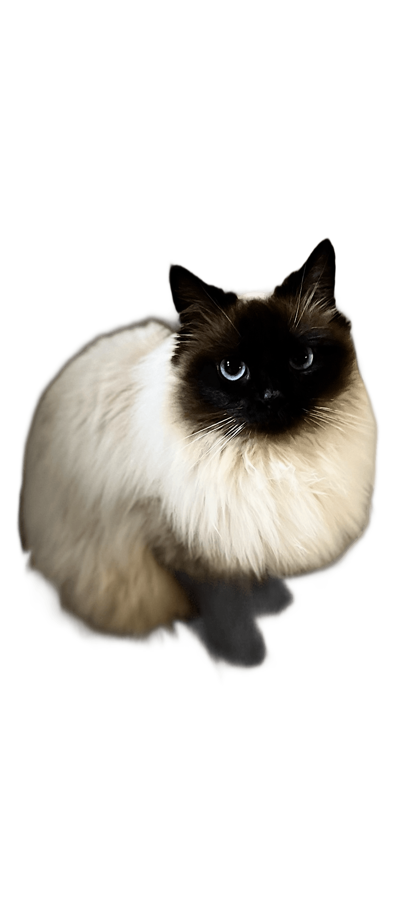
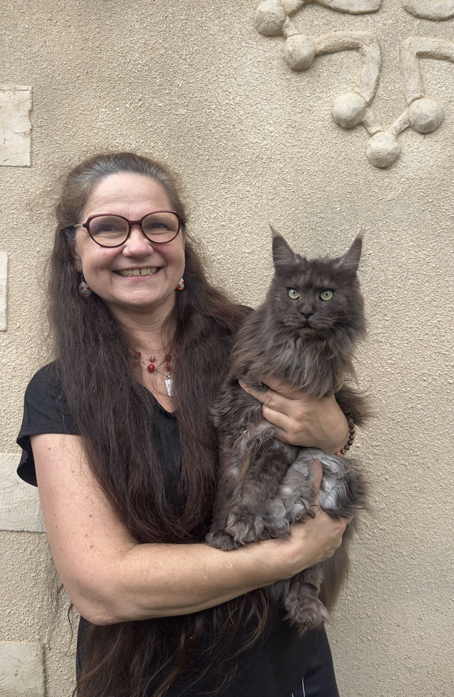

Chiens
Consultations, vaccins, chirurgie

Chats
Stérilisation, dentisterie, soins

Lapins
Suivi, parasitologie, conseils

NAC
Rongeurs, furets, tortues et plus
Votre vétérinaire à l'écoute de tous vos compagnons —
avec douceur, expertise et bienveillance.
Consultations, vaccins, chirurgie
Stérilisation, dentisterie, soins
Suivi, parasitologie, conseils
Rongeurs, furets, tortues et plus


Bilan de santé, suivi régulier et consultations d'urgence pour tous vos compagnons.
Prise de sang, échographie — des diagnostics précis réalisés directement sur place.

Avec plus de 30 ans d'expérience et une approche naturelle et bienveillante, la Dre PAYRIERE offre une gamme complète de soins vétérinaires pour chiens, chats, lapins, rongeurs et NAC.
Programme de vaccination adapté à chaque espèce pour une protection optimale tout au long de la vie.
Bloc opératoire moderne pour les interventions courantes : stérilisation, chirurgie cutanée, et plus.
Détartrage, soins dentaires et conseils pour une bonne hygiène bucco-dentaire de votre animal.

Médecin vétérinaire passionnée
Passionnée par les animaux depuis toujours, la Dre PAYRIERE exerce la médecine vétérinaire avec rigueur et bienveillance. Son cabinet accueille chiens, chats, lapins et rongeurs dans une atmosphère chaleureuse, pensée pour réduire le stress des animaux comme de leurs propriétaires.
Des soins pensés pour le bien-être naturel de votre animal
La Dre PAYRIERE privilégie autant que possible les solutions naturelles avant de recourir aux traitements conventionnels. La phytothérapie — utilisation thérapeutique des plantes — est au cœur de sa pratique : moins d'effets secondaires, une approche douce et respectueuse de l'organisme de votre animal.
La Dre PAYRIERE recommande la stérilisation chez la chatte et le chat mâle. Elle prévient les maladies hormonales, réduit les comportements indésirables et améliore significativement la qualité et l'espérance de vie de votre félin.
La Dre PAYRIERE ne pratique pas la stérilisation chirurgicale du chien. Il privilégie l'implant hormonal (Suprelorin®), une alternative réversible et sans anesthésie générale qui suspend temporairement la fertilité tout en préservant l'équilibre hormonal essentiel au bon développement du chien.
Les retours de nos patients à quatre pattes… et de leurs humains 🐾

« Un grand merci au Dr Payriere qui a pris soin de mon chat en urgence et est restée en contact tout le week-end. Très pro, attentionnée et réactive, je recommande vivement ! »

« Vétérinaire très à l'écoute et disponible. Elle suit notre lapin depuis 1 an et maintenant notre bébé pomsky. Vous pouvez y aller les yeux fermés. »

« Une veto en or et passionnée, toujours dispo en cas de besoin. Utilisation raisonnée des médicaments, remplacés par des produits naturels quand c'est possible. »

« Cette vétérinaire est passionnée par son métier et cela se ressent. Son savoir-faire la positionne parmi les meilleures que j'ai pu rencontrer. »

« Elle nous a redonné confiance aux vétérinaires ! Ostéopathie, acupuncture, fleurs de Bach — même pas besoin d'endormir notre chat craintif pour le manipuler. »
« Elle nous a redonné confiance aux vétérinaires ! Ostéopathie, acupuncture, fleurs de Bach — même pas besoin d'endormir notre chat craintif pour le manipuler. »
« Cette vétérinaire est passionnée par son métier et cela se ressent. Son savoir-faire la positionne parmi les meilleures que j'ai pu rencontrer. »
« Une veto en or et passionnée, toujours dispo en cas de besoin. Utilisation raisonnée des médicaments, remplacés par des produits naturels quand c'est possible. »
« Vétérinaire très à l'écoute et disponible. Elle suit notre lapin depuis 1 an et maintenant notre bébé pomsky. Vous pouvez y aller les yeux fermés. »
« Un grand merci au Dr Payriere qui a pris soin de mon chat en urgence et est restée en contact tout le week-end. Très pro, attentionnée et réactive, je recommande vivement ! »
Le cabinet est point relais ChronoVet : commandez vos produits vétérinaires en ligne et venez les récupérer directement au cabinet, sans frais de livraison supplémentaires. La Dre PAYRIERE a sélectionné pour vous une gamme de qualité — prix compétitifs, conseils inclus.
Retrait au cabinet, sans livraison
Produits validés par la Dre PAYRIERE
Paiement sécurisé en ligne
Sélection naturelle & vétérinaire
Nous sommes là pour vous et vos animaux
3 impasse des Coquelicots
Saint-Paul-sur-Save, 31530
05 61 49 27 99
mpayriere@gmail.com
🚨 Urgence en dehors des heures d'ouverture
Contactez les Urgences Vétérinaires de Toulouse :
🏥| Lundi | 9h30 – 12h30 / 15h – 19h |
| Mardi | 🏠 Visite à domicile |
| Mercredi | 9h30 – 12h30 / 15h – 19h |
| Jeudi | 🏠 Visite à domicile |
| Vendredi | 9h30 – 12h30 / 15h – 19h |
| Samedi | Fermé |
| Dimanche | Fermé |